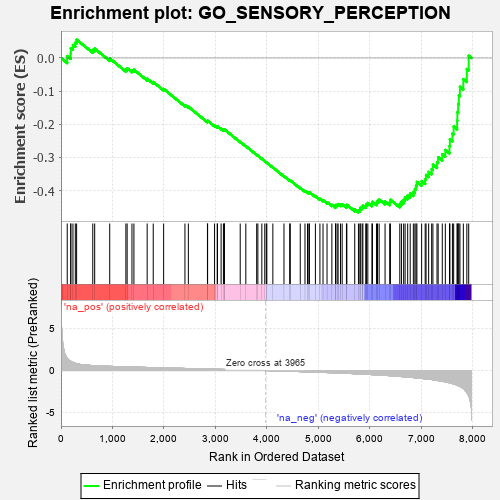

| | | Dataset | 7d |
| Phenotype | NoPhenotypeAvailable |
| Upregulated in class | na_neg |
| GeneSet | GO_SENSORY_PERCEPTION |
| Enrichment Score (ES) | -0.46559933 |
| Normalized Enrichment Score (NES) | -1.5127927 |
| Nominal p-value | 0.0011160715 |
| FDR q-value | 0.17760338 |
| FWER p-Value | 1.0 |
Table: GSEA Results Summary

Fig 1: Enrichment plot: GO_SENSORY_PERCEPTION
Profile of the Running ES Score & Positions of GeneSet Members on the Rank Ordered List
| PROBE | GENE SYMBOL | GENE_TITLE | RANK IN GENE LIST | RANK METRIC SCORE | RUNNING ES | CORE ENRICHMENT | | 1 | RTP3 | | | 121 | 1.425 | 0.0059 | No |
| 2 | RORB | | | 189 | 1.097 | 0.0137 | No |
| 3 | NCAM2 | | | 191 | 1.085 | 0.0297 | No |
| 4 | KIFC3 | | | 232 | 0.978 | 0.0392 | No |
| 5 | SOX14 | | | 278 | 0.859 | 0.0463 | No |
| 6 | RGR | | | 303 | 0.814 | 0.0554 | No |
| 7 | KCND2 | | | 617 | 0.590 | 0.0244 | No |
| 8 | EYS | | | 654 | 0.575 | 0.0284 | No |
| 9 | LRIG1 | | | 946 | 0.497 | -0.0012 | No |
| 10 | WDR36 | | | 1260 | 0.437 | -0.0345 | No |
| 11 | NOB1 | | | 1284 | 0.433 | -0.0310 | No |
| 12 | DRGX | | | 1378 | 0.414 | -0.0366 | No |
| 13 | P2RY1 | | | 1416 | 0.407 | -0.0353 | No |
| 14 | BACE1 | | | 1673 | 0.360 | -0.0625 | No |
| 15 | GRM8 | | | 1791 | 0.339 | -0.0723 | No |
| 16 | ROR1 | | | 1993 | 0.306 | -0.0933 | No |
| 17 | BTBD9 | | | 2407 | 0.245 | -0.1421 | No |
| 18 | VSX1 | | | 2473 | 0.231 | -0.1470 | No |
| 19 | NR2E1 | | | 2844 | 0.177 | -0.1914 | No |
| 20 | CLN6 | | | 2847 | 0.177 | -0.1890 | No |
| 21 | ANO1 | | | 2982 | 0.152 | -0.2038 | No |
| 22 | OPA3 | | | 3035 | 0.145 | -0.2082 | No |
| 23 | LEF1 | | | 3037 | 0.144 | -0.2062 | No |
| 24 | GPX1 | | | 3109 | 0.135 | -0.2132 | No |
| 25 | SFRP5 | | | 3154 | 0.129 | -0.2169 | No |
| 26 | PAX6 | | | 3170 | 0.127 | -0.2169 | No |
| 27 | OR5B2 | | | 3173 | 0.126 | -0.2153 | No |
| 28 | CDK5 | | | 3480 | 0.080 | -0.2530 | No |
| 29 | MAPK3 | | | 3589 | 0.062 | -0.2658 | No |
| 30 | REEP2 | | | 3800 | 0.027 | -0.2921 | No |
| 31 | WDR47 | | | 3823 | 0.023 | -0.2945 | No |
| 32 | NIPBL | | | 3900 | 0.010 | -0.3040 | No |
| 33 | GLRA1 | | | 3957 | 0.001 | -0.3111 | No |
| 34 | EYA1 | | | 3987 | -0.006 | -0.3147 | No |
| 35 | TULP2 | | | 3997 | -0.007 | -0.3158 | No |
| 36 | MTOR | | | 4114 | -0.025 | -0.3301 | No |
| 37 | OPA1 | | | 4330 | -0.065 | -0.3565 | No |
| 38 | REEP6 | | | 4441 | -0.084 | -0.3692 | No |
| 39 | KCNQ4 | | | 4452 | -0.085 | -0.3692 | No |
| 40 | NMUR2 | | | 4646 | -0.127 | -0.3919 | No |
| 41 | CNNM4 | | | 4738 | -0.147 | -0.4013 | No |
| 42 | MYO5A | | | 4787 | -0.155 | -0.4051 | No |
| 43 | P2RX4 | | | 4813 | -0.161 | -0.4058 | No |
| 44 | WDR1 | | | 4824 | -0.163 | -0.4047 | No |
| 45 | FZD4 | | | 4940 | -0.186 | -0.4165 | No |
| 46 | GRAP | | | 5028 | -0.204 | -0.4246 | No |
| 47 | DRD2 | | | 5088 | -0.221 | -0.4288 | No |
| 48 | TBX1 | | | 5166 | -0.241 | -0.4350 | No |
| 49 | SCN1A | | | 5260 | -0.261 | -0.4429 | No |
| 50 | NPY2R | | | 5331 | -0.281 | -0.4476 | No |
| 51 | UBR3 | | | 5332 | -0.281 | -0.4434 | No |
| 52 | ITPR3 | | | 5361 | -0.288 | -0.4427 | No |
| 53 | GRIN1 | | | 5381 | -0.291 | -0.4408 | No |
| 54 | IMPG1 | | | 5428 | -0.302 | -0.4421 | No |
| 55 | LRIG2 | | | 5460 | -0.310 | -0.4415 | No |
| 56 | FGFR1 | | | 5543 | -0.332 | -0.4469 | No |
| 57 | PDE6D | | | 5551 | -0.333 | -0.4429 | No |
| 58 | SIX6 | | | 5704 | -0.377 | -0.4566 | No |
| 59 | GLRB | | | 5776 | -0.398 | -0.4597 | Yes |
| 60 | BBS4 | | | 5806 | -0.407 | -0.4573 | Yes |
| 61 | BEST2 | | | 5811 | -0.408 | -0.4517 | Yes |
| 62 | ARL6 | | | 5847 | -0.417 | -0.4499 | Yes |
| 63 | BBS5 | | | 5862 | -0.421 | -0.4454 | Yes |
| 64 | KCNQ1 | | | 5918 | -0.441 | -0.4459 | Yes |
| 65 | CNGA1 | | | 5931 | -0.445 | -0.4408 | Yes |
| 66 | PGAP1 | | | 5958 | -0.457 | -0.4372 | Yes |
| 67 | PPT1 | | | 6038 | -0.485 | -0.4401 | Yes |
| 68 | NR2E3 | | | 6048 | -0.488 | -0.4339 | Yes |
| 69 | DLG2 | | | 6126 | -0.513 | -0.4361 | Yes |
| 70 | SCN9A | | | 6146 | -0.518 | -0.4308 | Yes |
| 71 | THRB | | | 6178 | -0.531 | -0.4268 | Yes |
| 72 | OAT | | | 6293 | -0.572 | -0.4328 | Yes |
| 73 | BBS2 | | | 6383 | -0.608 | -0.4351 | Yes |
| 74 | BBS1 | | | 6397 | -0.616 | -0.4275 | Yes |
| 75 | RPGR | | | 6579 | -0.699 | -0.4401 | Yes |
| 76 | TUB | | | 6611 | -0.718 | -0.4334 | Yes |
| 77 | USH1G | | | 6654 | -0.740 | -0.4277 | Yes |
| 78 | TTC8 | | | 6682 | -0.753 | -0.4199 | Yes |
| 79 | NPY1R | | | 6732 | -0.776 | -0.4146 | Yes |
| 80 | TRPM8 | | | 6781 | -0.800 | -0.4088 | Yes |
| 81 | MGLL | | | 6842 | -0.838 | -0.4039 | Yes |
| 82 | ABCA4 | | | 6872 | -0.851 | -0.3949 | Yes |
| 83 | HEXB | | | 6894 | -0.864 | -0.3847 | Yes |
| 84 | ESPN | | | 6911 | -0.873 | -0.3737 | Yes |
| 85 | CCR2 | | | 7003 | -0.939 | -0.3713 | Yes |
| 86 | OPN4 | | | 7072 | -0.978 | -0.3654 | Yes |
| 87 | BBS7 | | | 7089 | -0.988 | -0.3527 | Yes |
| 88 | WHRN | | | 7139 | -1.025 | -0.3436 | Yes |
| 89 | OTOF | | | 7198 | -1.069 | -0.3351 | Yes |
| 90 | CNGB1 | | | 7222 | -1.096 | -0.3217 | Yes |
| 91 | MYO7A | | | 7302 | -1.175 | -0.3142 | Yes |
| 92 | TRPM1 | | | 7324 | -1.197 | -0.2991 | Yes |
| 93 | GRM1 | | | 7404 | -1.272 | -0.2902 | Yes |
| 94 | CNGA3 | | | 7463 | -1.353 | -0.2774 | Yes |
| 95 | TRPM3 | | | 7544 | -1.461 | -0.2658 | Yes |
| 96 | GRIK2 | | | 7552 | -1.471 | -0.2448 | Yes |
| 97 | BEST1 | | | 7601 | -1.554 | -0.2277 | Yes |
| 98 | TRPA1 | | | 7625 | -1.608 | -0.2067 | Yes |
| 99 | CST1 | | | 7692 | -1.746 | -0.1890 | Yes |
| 100 | MYO6 | | | 7697 | -1.753 | -0.1634 | Yes |
| 101 | HMCN1 | | | 7713 | -1.801 | -0.1385 | Yes |
| 102 | ASIC1 | | | 7726 | -1.838 | -0.1127 | Yes |
| 103 | CASP3 | | | 7747 | -1.902 | -0.0869 | Yes |
| 104 | DCDC2 | | | 7813 | -2.099 | -0.0639 | Yes |
| 105 | FYN | | | 7881 | -2.622 | -0.0333 | Yes |
| 106 | ASIC2 | | | 7917 | -2.995 | 0.0069 | Yes |
Table: GSEA details [plain text format]
Fig 2: GO_SENSORY_PERCEPTION: Random ES distribution
Gene set null distribution of ES for GO_SENSORY_PERCEPTION